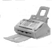

Preparing Your City to Greet Moshiach
Yud Shvat is approaching, the day the Rebbe accepted the nesius. Already starting on Asara B’Teives – “thirty days before the chag” – I began making a spiritual accounting about how to ready myself for this great day with a gift for the Rebbe, a gift worthy of being called a gift.
The fax machine in Yoske’s Chabad house office spewed forth the following page: 
B”H
Dear Yoske,
I greet you without any titles of respect because you and I grew up in Tomchei T’mimim where kavod is not valued much … Furthermore, we attended the same yeshiva and farbrenged with the same mashpiim.
Now I am writing you because I was sent to one of the countries in the CIS on the Rebbe’s shlichus and I’ve spent a long time working on a cheshbon ha’nefesh about what we should do in my city about inyanei Moshiach and Geula.
The Rebbe told us in particular that the only remaining shlichus is Kabbalas P’nei Moshiach Tzidkeinu, and this has to permeate all the rest of the good things that we do. When I examine closely my peulos over the past years, it becomes clear that I have been immersed, over my head, with the needs of the mosdos in my city and the activities of the Chabad house, but in most of the activities, inyanei Moshiach were not prominent enough. This bothers me.
Yud Shvat is approaching, the day the Rebbe accepted the nesius. Already starting on Asara B’Teives – “thirty days before the chag” – I began making a spiritual accounting about how to ready myself for this great day with a gift for the Rebbe, a gift worthy of being called a gift.
This is connected with what I wrote earlier. I think that the best present for the Rebbe would be to devote myself to carrying out his wishes and to prepare to greet Moshiach by having all our activities permeated with inyanei Moshiach and Geula.
This is the reason I am writing to you. I ask that you please help me with this. I heard that you are very successful in these activities in recent years and I want to join and be a part of this.
Please send me your ideas from the past, present and future so I can use them here, in my place of shlichus.
A Yashar Ko’ach
Moshiach Now!
Lazer
Somewhere in Europe
***
Yoske turned the page this way and that, thinking about what he had just read. He himself was busy before Yud Shvat in preparing the monthly program with his staff which would be their gift to the Rebbe in honor of this great day.
“What wonderful hashgacha pratis,” murmured Yoske as he handed the fax to Mendy, one of the people who worked at the Chabad house. “Tonight we are meeting here and will be discussing our Yud Shvat activities. I’ll have what to send him, b’ezras Hashem.”
Evening, at the Chabad House
Yoske: To get to the point, we need to come up with a new idea for Yud Shvat regarding inyanei Moshiach and Geula. As you see, I’ve put a recording device on the table, both to have a record of what we’ve discussed and to enable my friend Lazer to hear it, so he can use the ideas we come up with, even if we don’t end up using them all.
Mendy: We can also improve on the ideas of previous years in addition to coming up with something new. And that will also help him, because he will hear the previous ideas.
Yossi: I have an idea I thought of today, to make a two-sided card about the identity of Moshiach. It should be made of stiff paper and have a hole on top (see picture).
Shneur: What’s the hole for?
Yossi: The hole enables you to hang it from a doorknob. We will pay some guys who have a connection with the Chabad house and they will hang it from the door of every house.
Yoske: It can say, “Opening the Door for Moshiach.”
Yossi: Right, that’s a great idea. What do you think?
Mendy: It’s a good idea. Who will write the text on the other side?
Yossi: I think Shneur has a lot of experience coming up with text, as we saw from last year’s phone campaign.
Shneur: Spoken text is far different than written text!
Mendy: Before you figure out who will write it, please remind me – what was last year’s project?
Yossi: Last year, before Yud Shvat, Shneur wrote something up about kabbalas ha’malchus along with a telephone number for people to leave their hachlata in Torah and mitzvos. We gave the text to a professional announcer and added Chassidic music in the background and everybody in the city got a recorded message from the Chabad house.
Shneur: You forgot to add that at the same time, we sent out thousands of emails with the identical text.
Yossi: Which, by the way, proves that you are good at writing too …
Yoske: Okay, so Shneur can write material on inyanei Moshiach … And this year, we can do the projects we did last year by phone and email and add the card for the doorknob.
Mendy: In order to cover all bases, I suggest that all the people on our texting contact list receive a special text for Yud Shvat in a slightly different style. It should have a special saying about Moshiach and Geula that pertains to our time. This way, we will be using all possible forms of technology: a phone message, a text message, and an email.
Yoske: Sounds good. The Rebbe always quotes the maamer Chazal that everything Hashem created in the world, He created for His honor and so we need to use all the tools that technology has to offer, for holy purposes, certainly for the most important thing, the true and complete Geula.
Shneur: There is another area that we haven’t discussed yet and that is learning inyanei Moshiach and Geula. I think we need to make a number of shiurim that will deal with the signs of the Rebbe MH”M based on the Rambam. Let’s make these shiurim as short videos and send them to the addresses we have. That will be an incredible learning initiative!
Yossi: Right … After all, the Rebbe said in the sicha at the Kinus HaShluchim 5752, that the role of the shliach is to prepare the Jews of his city by explaining to them what Moshiach is about.
Shneur: Boruch Hashem, we have a great team at the Chabad house that can work on these things.
Yoske: I agree with you. We just need to say l’chaim to the success of all these good projects. Just in the merit of deciding to do them, even before we actually do them, may we merit to see the hisgalus of the Rebbe MH”M now!
Beis Moshiach (staff). "Preparing Your City to Greet Moshiach." Beis Moshiach, no. 907 (December 16, 2013).